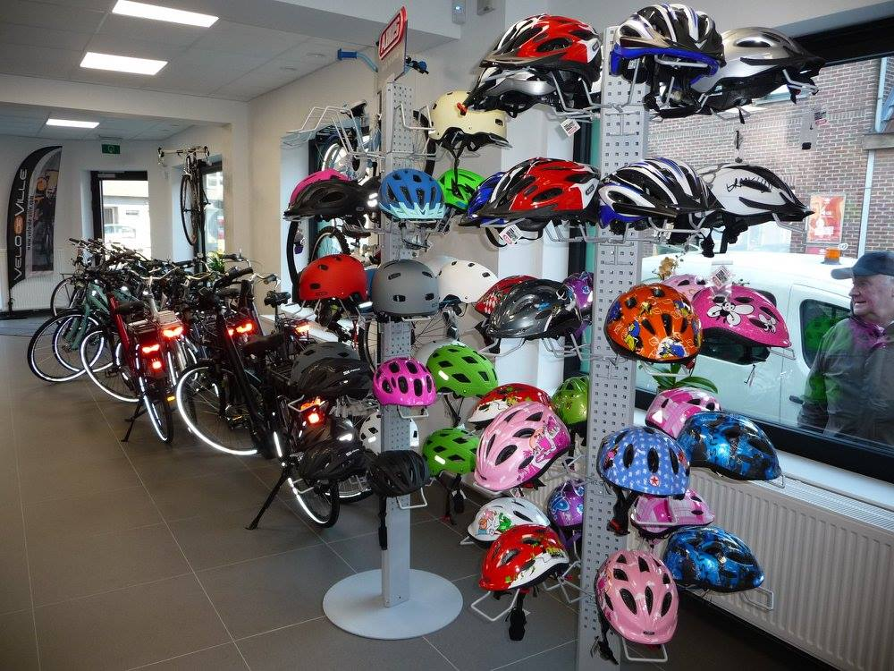

Velo De Ville
Custom-built in Duitsland, volledig configureerbaar, premium afwerking. U kiest het frame, de kleur, de componenten.
Vanaf €649 voor een eigen configuratie
Naar Velo De Ville →Ontdek onze stadsfietsen en e-bikes van Oxford en Velo De Ville. Volledig gemonteerd, rijklaar afgesteld en met gratis eerste service.

Zes voordelen van uw lokale fietsenmaker — betrouwbaar, persoonlijk en altijd dichtbij.
Geen doos aan de deur. Uw nieuwe fiets wordt door ons volledig gemonteerd en op uw zithouding afgesteld.
Elke nieuwe fiets krijgt na 3 maanden een gratis controlebeurt om spaken, bouten en kabels na te spannen.
Kom verschillende e-bikes en stadsfietsen proberen uit stock, of configureer uw eigen Velo De Ville in de winkel.
Heeft u een garantiedossier of defect onderdeel? Wij regelen het papierwerk en de reparatie rechtstreeks met de fabrikant.
Wie zijn fiets bij ons koopt, krijgt voorrang in de werkplaats bij onderhoud of onverwachte herstellingen.
Een onafhankelijke winkel in de Brugse Poort sinds 2011. Eigenaar aanwezig en BTW BE0578.875.016.
Zin in een proefrit of adviesgesprek?
Drie concrete herstellingen, drie concrete doorlooptijden. Geen “afhankelijk van het onderdeel”.
Lekke band? Binnenlopen met de fiets, plak of nieuwe band, meestal klaar terwijl u wacht.
Meer over bandenwissel →Accu, motor, display of firmware? We testen, rapporteren wat we vinden, en bellen u met een vaste prijs.
Meer over e-bike service →Versnellingen, ketting, remblokken, wiel — u krijgt een termijn op het moment dat u de fiets binnenbrengt.
Alle herstellingen →Kleine klussen zonder afspraak. Voor grotere werken bellen we u binnen de openingsuren terug met een termijn.